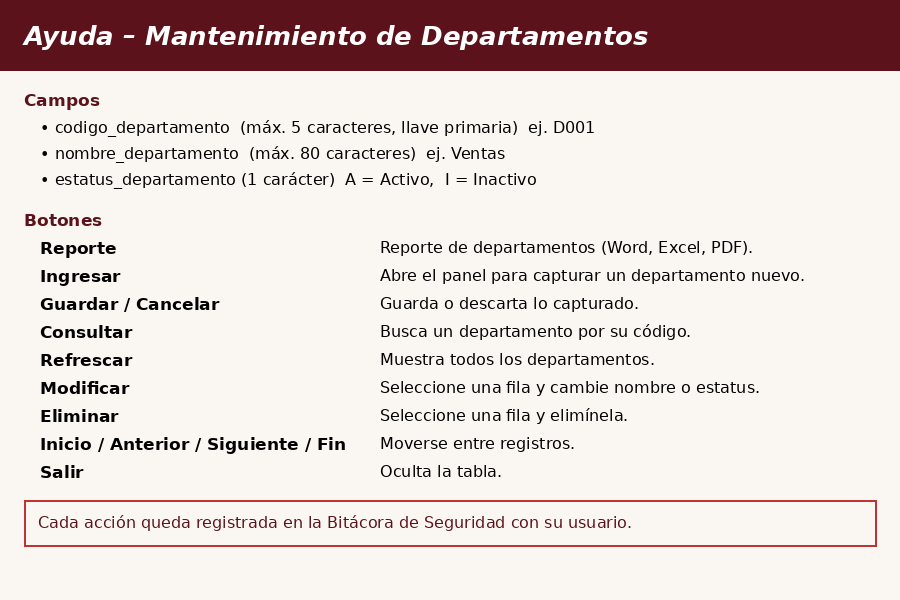

Esta es la ventana de mantenimiento de departamentos (código 2016), que se abre desde el menú de Seguridad con el botón "Departamentos". Utiliza el componente Navegador para ingresar, consultar, modificar y eliminar departamentos. Cada acción queda registrada en la Bitácora de Seguridad con el usuario que la realizó.

Código del departamento: máximo 5 caracteres, es la llave primaria y no se puede repetir (ej. D001).
Nombre del departamento: máximo 80 caracteres (ej. Ventas).
Estatus del departamento: 1 carácter, A = Activo, I = Inactivo.
Abre el panel de captura con los campos vacíos. Llene el código, el nombre y el estatus del departamento y presione "Guardar" para registrarlo o "Cancelar" para descartarlo. Al guardar aparece un mensaje de confirmación y la tabla se actualiza.
Abre la ventana de consultas donde puede buscar un departamento por su código. Al seleccionarlo, la tabla muestra únicamente ese registro; desde ahí puede modificarlo o eliminarlo.
Seleccione un departamento en la tabla y presione este botón. Se abre el panel con sus datos; el código no se puede cambiar. Cambie el nombre o el estatus y presione "Guardar".
Seleccione un departamento en la tabla y presione este botón. El sistema pide confirmación y, si acepta, el registro se elimina y la tabla se actualiza.
El botón "Reporte", arriba del Navegador, muestra dentro de la misma ventana el reporte formal de todos los departamentos registrados, con la opción de exportarlo a Word, Excel o PDF o imprimirlo. Al presionar "Ocultar reporte" se vuelve a la vista del Navegador. La generación del reporte queda registrada en la Bitácora.
1. Refrescar: vuelve a cargar todos los departamentos desde la base de datos.
2. Inicio, Anterior, Siguiente y Fin: permiten moverse entre los registros de la tabla.
3. Salir: oculta la tabla y deja solo la barra de botones del Navegador.
4. Los botones aparecen deshabilitados si el perfil del usuario no tiene permiso para esa acción.